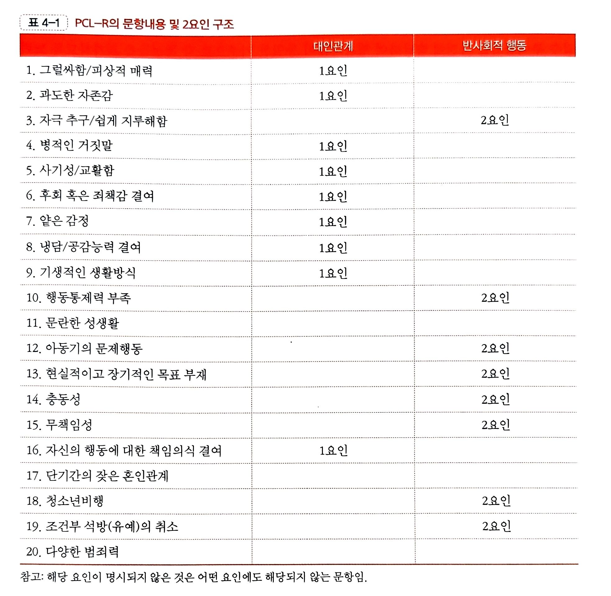

📌 범죄원인론
자유의지, 쾌락원칙에 의거한 범죄원인 파악
대표 학자: 베카리아, 벤담
신체조건과 범죄의 관계 파악 = 생물학적 관점
대표 학자: 롬브로소
| 이론명 | 핵심 내용 | - |
|---|---|---|
| 지능이론 | 지능 수준이 낮은 이가 간접적인 방식으로 비행에 연루됨 | 지능과 범죄 간 상관성 낮음 |
| 정신분석이론 | 욕구 충족 지연 능력 및 현실 원칙 순응성을 터득하지 못한 경우 범죄를 저지름 | 도덕성 발달은 유년기 친부모와의 친밀한 관계 형성에 좌우됨 |
| 성격이론 (E/N/P) | 외향성(충동성), 신경증, 정신증이 높을수록 범죄 가능성 증가 |
|
| 학습이론 | 강화 받은 행위는 학습, 처벌 받는 행위는 사라짐 | 타인을 관찰함으로써 행동을 학습한다는 전제 |
| 사회인지이론 | 인지적 분석 단계 부재, 도덕성 추론의 단계의 생략으으로 범죄 발생 | 인지 과정에서 자기통제력, 타인 이해 및 공감 능력이 결핍된 것이 원인 범죄자들은 사회정보처리 모형에 어긋난 자극 처리 과정을 보임 |
사회구조적 이론
- 생태학적 관점
- 도시의 변화가 사회를 해체시켜 전통적 양식이 붕괴, 지배적 가치와 규범이 비합법적 가치와 규범과 대립하며 범죄 증가
- 긴장이론
- 도시의 변화와 문화적으로 규정된 목표와 목표를 위한 수단 사이의 불일치가 무규범 상태의 아노미 상태를 초래
- 해당 경험에 대한 좌절과 울분이(긴장이) 수단으로써 범죄를 의존하게 함
- 하위문화 이론
- 하층의 청소년이 성공적 사회에서 소외되어 그들만이 하층문화를 개발하고, 그에 따라 집단 내에서, 하층 남자들에 의해서 비행 발생
사회과정이론
- 사회학습이론
- 차별적 접촉 : 대인 간의 사회적 작용에 의해 학습, 법이 규정한 지배적 문화가 아닌 집단 고유의 규범을 따를 경우 범죄를 저지르게 됨
- 차별적 강화 : 직접적인 조작적 조건화, 모방을 통해 범죄 행동 학습
- 중화 : 사회규범을 거부하진 않으나, 관습적 가치와 태도를 합리화해서 범죄를 저지름
- 사회통제이론
- 개인과 사회 간의 유대가 약하거나 깨졌을 때 비행 행동 발생
- 사회적 유대의 4요소 : 애착, 관여, 참여, 신념
- 낙인 이론
- 일탈에 대한 사회적 반응이 일탈의 특성과 강도 규정
📌 정신병질
정신병질이란?
반사회적 인격장애: 자신의 이득을 위해 타인의 권리를 무시하거나 침해하는 경향
정신병질(Psychopathy)은 사이코패시라고도 하며, 타인을 도구로 이용하고 감정적 깊이가 없는 것이 특징이다.
🔒 사이코패스(psychopath)
1. 대인관계 및 정서적 결함
- 타인을 도구로 이용하는 극단적 이기주의
- 사랑, 이타심, 죄책감 등 깊은 정서의 결여
- 공감능력 결핍
- 감정을 흉내낼 수 있으나 진심은 없음
- 따뜻한 열정, 진실한 충심을 낯설어함
- 교활하나, 정서적으로 둔감
- 피해자에 대한 공감이나 이해심 부족
2. 인지 및 자기중심성
- 자기중심적 사고로 타인의 관점을 상상하는 것이 어려움
- 고정된 인지 구조를 수정하려 하지 않음
- 불안한 상황을 분노 유발 상황으로 지각
3. 충동성 및 행동 문제
- 조급하고 충동적이며 폭력 억제 능력 부족
- 회피학습 능력 부족
4. 뇌 기능 및 정서 정보 처리 문제
- 정서 정보를 피상적으로 처리 => 효율성X
- 특정 정보가를 지닌 자극(슬픔, 공포 등)의 처리 손상상
- 편도체 및 변연계 기능 저하로 인한 정서 자극에 대한 활성화 저하
- 전전두엽의 광범위한 손상
🔑 정신병질의 발달 요인
1. 주의력결핍과잉행동장애(ADHD), 반항장애/품행장애(ODD/CD)
- 정신병질과 높은 상관을 나타내며 전조로 간주됨
- 불안장애 징후는 없으며, 정서 영역 손상으로 해석됨
- 범죄 행위는 목표 달성을 위한 도구적 성격을 띔
2. 유전적 소양
- 쌍생아 연구 결과, 반사회적 행동의 유전적 영향 확인
- 15세 이전에는 공통 환경, 성인기에는 유전 영향이 더 큼
3. 부모결핍
- 초기 가족환경 실패로 도덕 판단 학습에 실패
- 부모의 상실, 냉정한 태도, 변덕스러운 훈육이 영향
- 양육 방식이 정신병질 성향 형성에 깊이 관여함
4. 학습으로 인한 행동 습관
- 역기능적 가족과 일관되지 않은 양육 태도
- 적대적, 권위적 부모 / 책임 없는 환경
- 이로 인해 반사회적 공격 행동이 학습되고 지속됨
- 아동기의 문제행동이 성인 범죄로 이어짐
5. 문화
- 공격 행동을 억제/허용하는 문화적 배경에 따라 유병률 차이 발생
6. 신체적 결함
- 유전, 임신/출산 중 합병증
- 안와 전두피질 손상, 세로토닌/노아드레날린계 이상
- 모노아민 산화효소(MAO) 저하 등 신경학적 요인
📋 정신병질의 측정 (PCL-R)
정신병질을 객관적으로 평가하기 위해 PCL-R(Hare’s Psychopathy Checklist – Revised)가 사용된다. 각 항목은 0~2점으로 평가하며, 범죄 예측력이 매우 뛰어나다.
2요인 구조
대인관계 요인 + 반사회적 행동 요인
3요인 구조
반사회적 행동 제외

4요인 구조
적합도 가장 높음, 생활양식 요인이 재범 예측에 강력

📌 정신장애와 범죄
정신장애란?
개인의 삶과 일생을 살아가는 데 충분히 방해가 된다고 전문적으로 판명된 정신적 질환
사회 규칙에 따라 행동하지 못하고, 예측할 수 없으며, 행동을 통제할 수 없음
⛓️ 정신장애와 범죄의 관계
- 1. 정신병 진단 기준에 폭력이 포함됨
- 2. 정신과적 약물 복용이 폭력에 영향을 미칠 수 있음
- 3. 폭력적 환자를 집중 대상으로 연구하는 경향
- 4. 공식기록에서 정신병 징후로써의 폭력성이 과장됨
- 5. 사회복귀 제한 → 반복적 이미지 고착
⇒ 위와 같은 이유로 정신장애와 폭력적 범죄를 연결 짓는 편향성이 나타남
🧠 정신장애의 주요 유형
정의: 현실 인식의 왜곡, 와해된 사고 및 정서 반응
- 편집형: 망상, 의심, 외부 반응을 적대적으로 해석
- 긴장형: 혼미, 흥분, 과운동 등 정신운동 장애
- 와해형: 산만한 행동과 표현, 부적절한 감정
- 미분화형: 다른 유형의 특징이 혼합된 형태
- 잔류형: 과거 조현병 진단 이력이 있으며 잔존 증상 있음
정의: 현실과 동떨어진 강한 믿음, 피해망상이 특히 범죄와 연관
- 피해망상, 과대망상, 색정망상, 신체망상, 관계망상 등
- 우울장애: 무기력, 절도 및 가정 내 살인과 연관
- 양극성장애: 감정 기복으로 인한 충동 조절 어려움
- 공감 능력 부족, 타인에 대한 냉소와 조종
- 법 위반, 충동성, 사기, 폭력 성향
- 약물·음주 문제, 장기적 관계 유지 어려움
정의: 해리성 정체감 장애 – 2개 이상 인격이 교대로 행동 통제
- 물질장애: 알코올, 대마, 수면제, 각성제 등 중독
- 비물질장애: 도박, 쇼핑 등 행동중독
👮 정신장애와 형사책임
- McNaughten 원칙: 옳고 그름 판단 불가 시 면책
- Durham 원칙: 질환이 원인인 경우 책임 없음
- Brawner 원칙: 인식·통제 능력 결여 시 면제
- GBMI: 유죄 인정 + 정신장애 인정
법정 출석 능력
- CST: 문장 완성 검사
- CAI / FIT: 사고·감정 면담 지침
- GCCT: 법 이해도 테스트 (21문항)
형사책임 평가 도구
- R-CRAS: 계획성, 통제력 등 종합 분석
- MSO: 과거, 현재, 범죄 당시 면담 평가